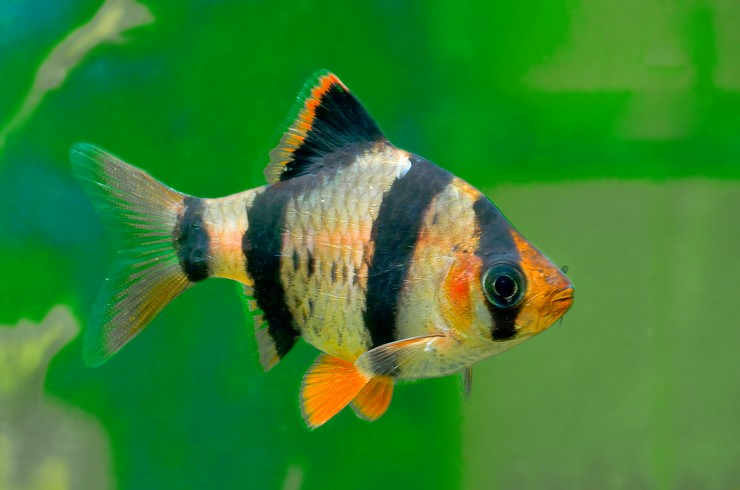

Популярные аквариумные рыбки
Барбусы
Барбусы – широкая группа рыб, среди которых встречаются и миниатюрные рыбки, и настоящие гиганты. Объединяет их стайный образ жизни и постоянная «суетливость». Порой создается впечатление, что игры друг с другом прекращаются только с выключением света в аквариуме. Барбусы неприхотливы в содержании и при желании легко размножаются в домашних условиях. Следует отметить, что некоторые представители этой группы своей избыточной активностью могут стать источником стресса для более медлительных рыб. Поэтому вопросу совместимости следует уделить особое внимание, если вы планируете содержать барбусов в общем аквариуме.